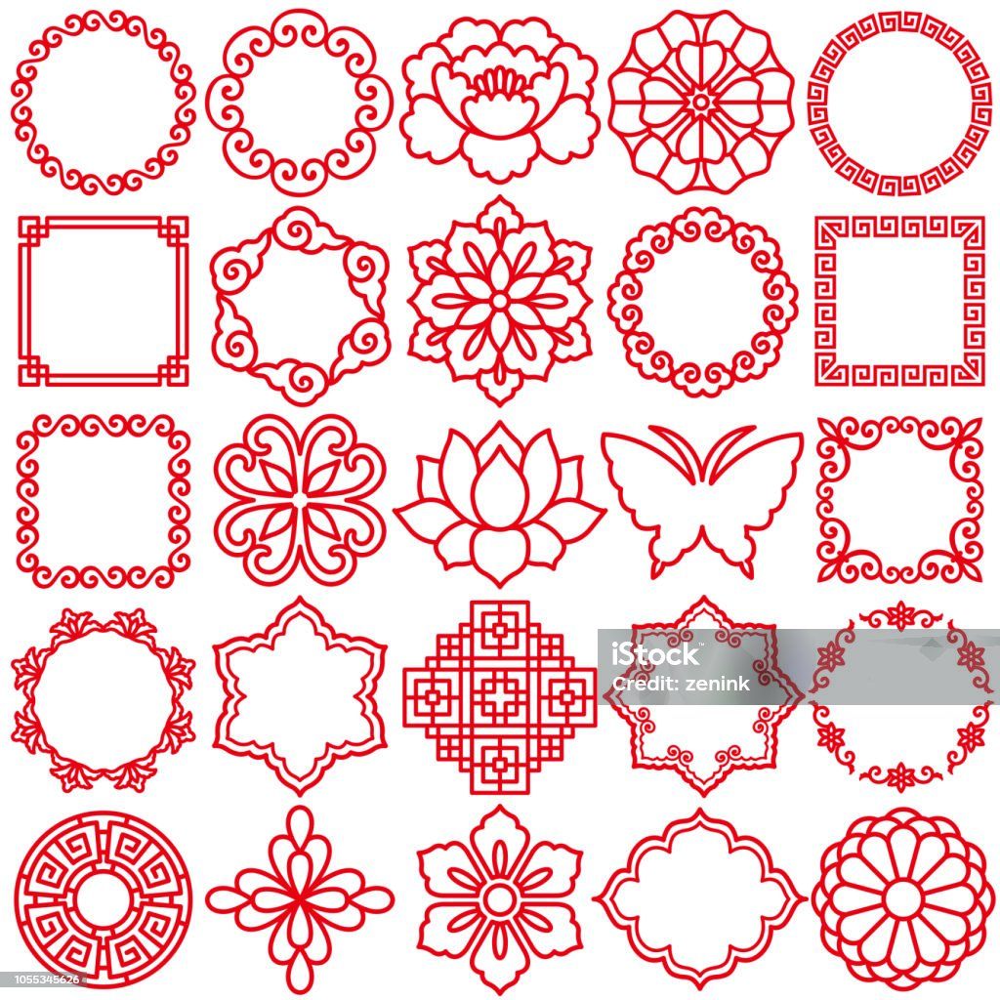

ORNAMENT ATLAS · 25 REFERENCES + 3 STUDIES
下载 28 个纹样组件 ↓一形，万象
25 个参考图案与 3 个研究纹样汇入同一图谱。点击图案，拖动重复数、半径与厚度，观察原子组合；选择任意一层，即可带着当前参数放入动态测试台。
已按原图重建并逐项复验： 25 项当前叠加与修复记录 ↗
展开参考原图 · 按 5 × 5 位置对照
图形为基于参考结构的矢量复绘，命名用于本图谱的识别与检索。

25 个参考图案与 3 个研究纹样汇入同一图谱。点击图案，拖动重复数、半径与厚度，观察原子组合；选择任意一层，即可带着当前参数放入动态测试台。
已按原图重建并逐项复验： 25 项当前叠加与修复记录 ↗
图形为基于参考结构的矢量复绘，命名用于本图谱的识别与检索。
